| 日付 | 2013年4月27日（土） - 2013年4月29日（月） | ||||||
|---|---|---|---|---|---|---|---|
| 山域 | 阿武隈周辺 | ||||||
| メンバー | 家族（長女・2歳） | ||||||
| 山行形態 | 子連れ2泊3日ホテル泊 | ||||||
| アクセス | 車 | ||||||
| ルート (Map1) |
|
今年のGWは10連休もあるのだが、妻が妊娠中のため
家族そろっての旅行は不可能である。
しかし10日も家にいるのはさすがに辛い。
そこで2歳になる娘と2人で2泊3日の旅行に行くことにする。
車の移動時間が長くなる遠出は極力控えたいが
日帰りで行ける場所に行くのも嫌である。
磐梯山、恵那山などが頭に浮かんだが子連れでは少々厳しい。
ここは安全に、北茨城の低山めぐりをすることにする。
日程は世間一般の平日であるGW真中の3日間を使いたかったが
どうも天気予報が芳しくない。
しかたがないので、GW前半の土日祝で出かけることにする。
混雑するのは仕方がないだろう。天候重視だ。
正月に子供と2人で帰省したことはあるが、2人きりの旅行は初めて。
初めて単独で海外旅行に行った時のような不安を抱くが、旅とは苦労あってのものである。
1日目
首都高の渋滞に巻き込まれるのは嫌なため5時に起床。
6時前に首都高に乗れたため全く混雑せず、あっさり常磐道に乗ることができた。
想定よりだいぶ早く茨城に着いたため、時間に余裕があれば寄ろうと思っていた
竜神大吊橋に行くことにする。早速こいのぼりがお出迎えだ。
まだ8時半なので駐車場は空いている。
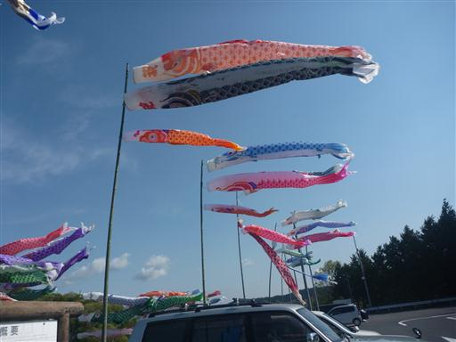
竜神大吊橋。長さ375m、下にあるダムの湖面からの高さ100mという巨大な吊橋だ。
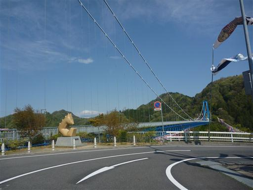
大きな橋台も目を引く。
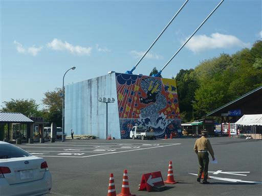
料金300円を払って橋を渡る。
歩行者専用の吊橋だが、がっちりした橋のため全く揺れることはない。
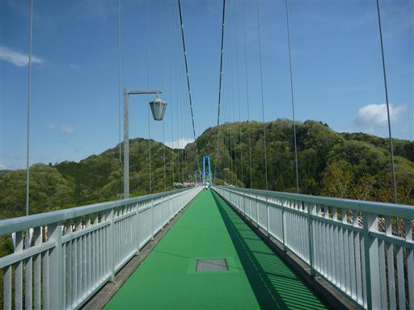
橋の両側にはこいのぼりが泳いでいる。
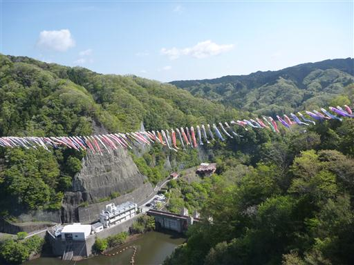
橋の途中にはところどころで下を覗ける場所がある。
汚れていてくっきり見えないのが残念だが、なかなか高度感がある。
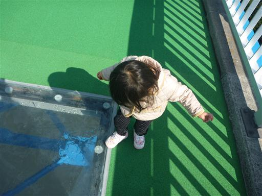
橋を渡りきる。間近で見るこいのぼりは本当に大きい。
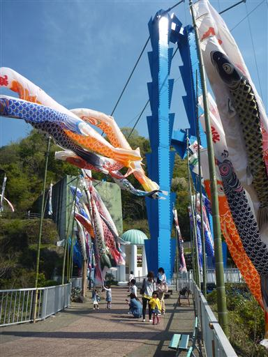
子供はこいのぼりに興味を持たず、階段を見つけ嬉々として登っている。
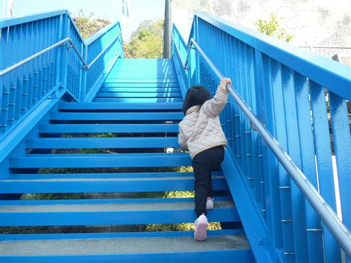
こちら側の橋台を見上げる。描かれているのは竜の絵だ。
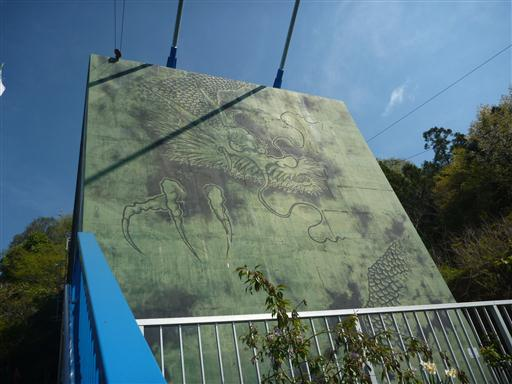
高台から竜神大吊橋を眺める。非常に美しい橋だ。
早朝とは言えGWにしては人影が少ない。
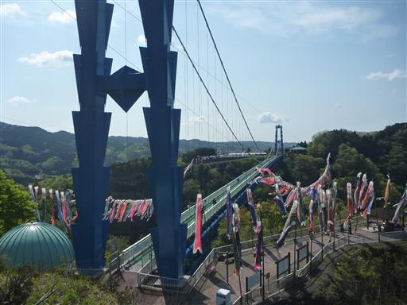
ここから駐車場まで遊歩道が整備されているらしいので、行ってみることにする。
ダムの湖面目指して急な階段をどんどん下って行く。
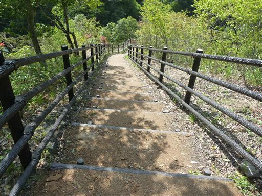
ダムの湖面まで下りてくる。階段を下りて車道と合流するところには回転扉が設けられていて
逆側から吊橋に辿りつけないようになっていた。
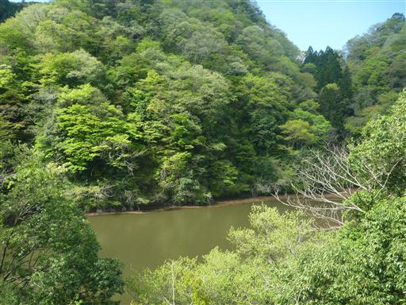
湖岸沿いの車道を歩いていく。
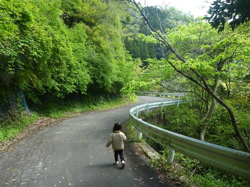
見上げると竜神大吊橋が真上だ。
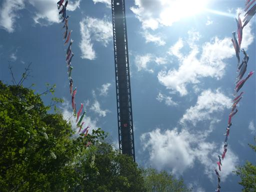
ダム湖は非常に小規模なもの。湖を取り囲む木々の新緑が美しい。
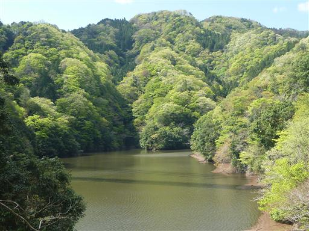
ダムの堰堤を渡る。下を覗き込むと勢いよく放水している。
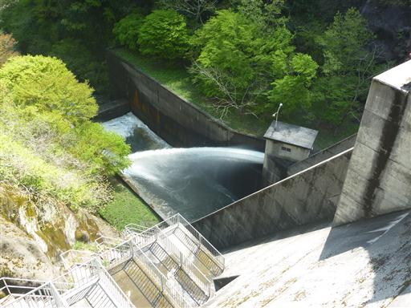
ダムから吊橋を望む。下から眺める姿もまた美しい。
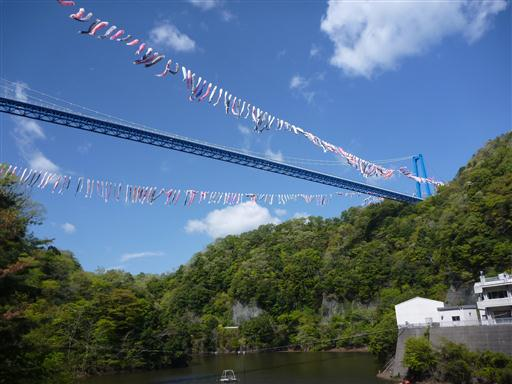
道は細くなり、その後吊橋の上部まで延々と階段が続く。
子供を抱っこしたり歩かせたりしながら登っていく。
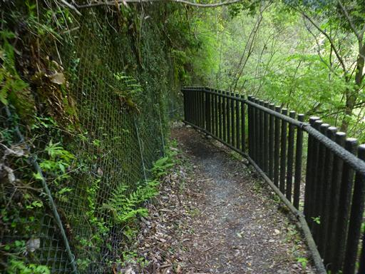
吊橋上部まで戻ってくる。紅葉の名所として知られる場所だが新緑も美しく
なかなか良い観光スポットだった。

吊橋観光後は昼食をとることにする。訪れたのはもみじ苑。
この辺りはそばの産地なので、まずはそば屋を訪問だ。
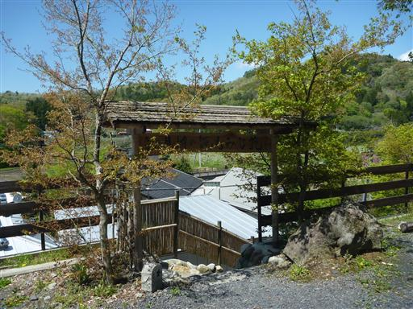
駐車場から店まで小道が続いていて、辺りの風景が楽しめるようになっている。
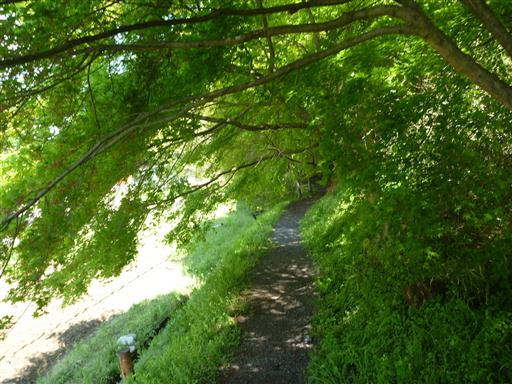
道端には明かりもあって風情がある。
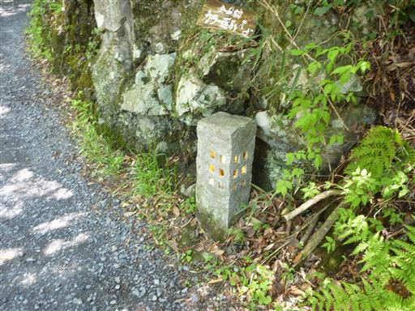
店に到着。2階建ての思ったよりも大きな建物だ。
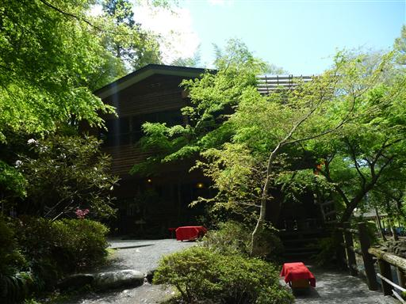
店のすぐそばには月待ちの滝が流れ落ちている。
周りは新緑に包まれ店の前の庭という雰囲気だ。滝の名前もまた良い。
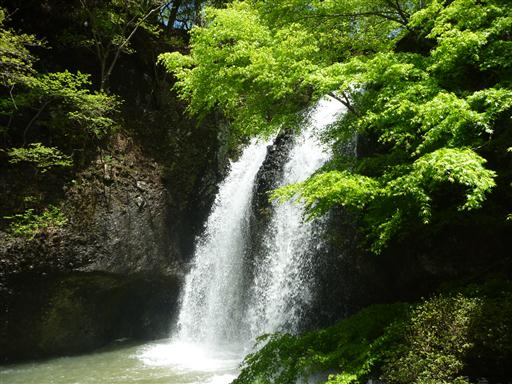
側には大きな水車も見える。
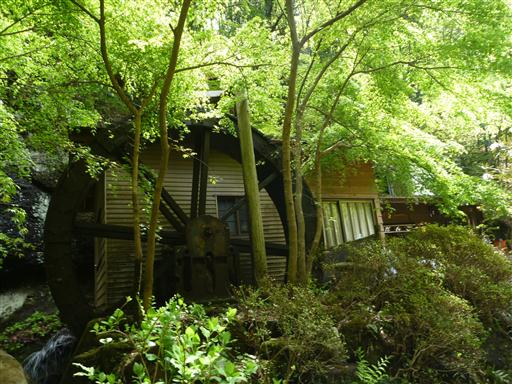
店の周りを散策したあと店内に入る。1階の座敷席を選択。
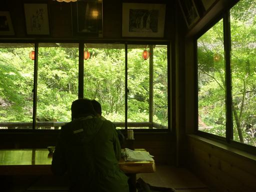
窓からは月待ちの滝が見えている。滝の音が心地よい。
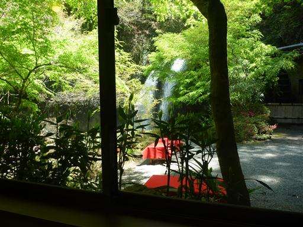
十割そばを注文、美味いそばであったが子供とシェアするには量が足りない。団子を追加注文する。
子供は初めてのそばだったが、美味しかったのかぱくぱく食べていた。
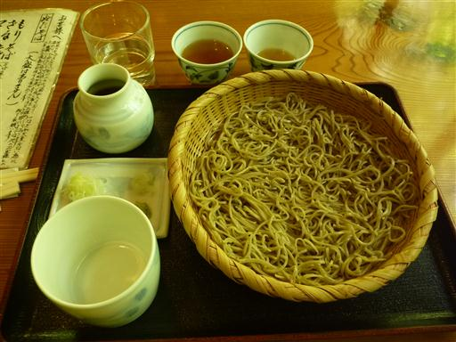
食事を終えると改めて月待ちの滝をじっくり観賞。
この滝は裏側に回り込むことができるのだが、水しぶきが激しく子供が嫌がるため断念した。
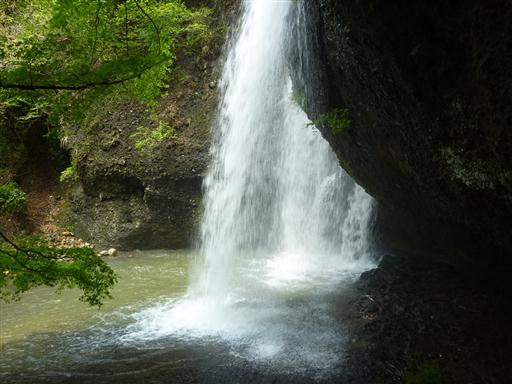
腹ごしらえをしたら、本日の目的地・八溝山に向かう。
山頂まで車道が通じている山なのだが、それでは登山にならないため
中腹の日輪寺入口の駐車場に車を停める。標高760m。
車を降りると強風が吹きつけ、思いの外寒い。
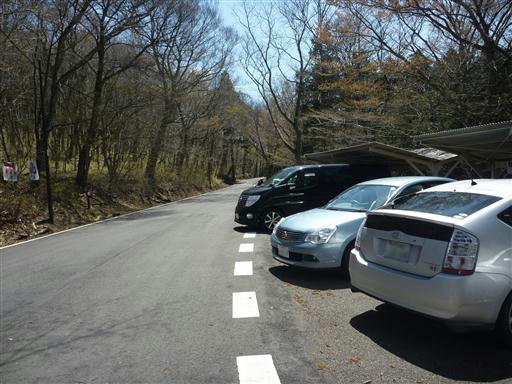
準備を整えて登山道に入っていく。
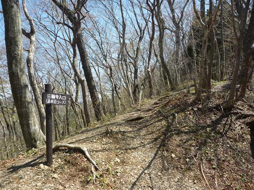
登山道は最初下りから始まる。下りから始まるというのはどうも落ち着かない。
足元にはカタクリの花が咲いている。
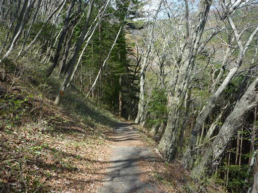
小さな沢を渡る。ここにはワサビがつくられている。
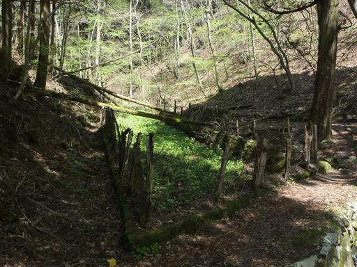
沢沿いには小規模だがニリンソウの群落が見られる。
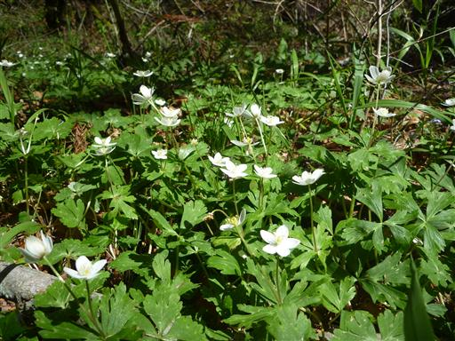
日輪寺に近づくと杉の巨木が多くなってくる。
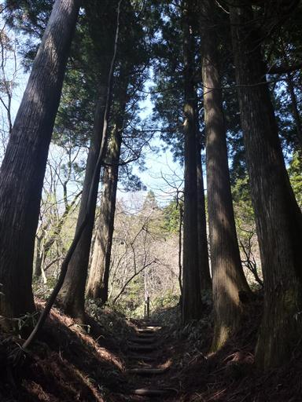
日輪寺の駐車場に到着。歴史のある寺で往時は栄えたらしいが今は閑散としている。
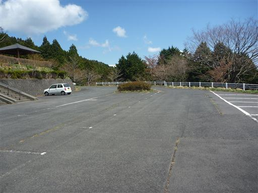
駐車場の奥にポツリと日輪寺が建っている。人影はなく静かだ。
扉を開けると中には僧が一人いた。
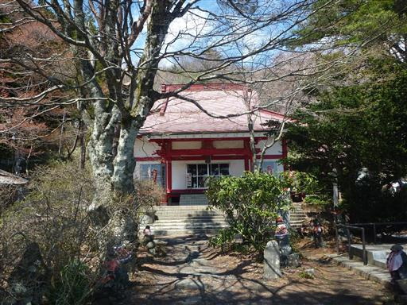
隣には古そうな建物が建っている。
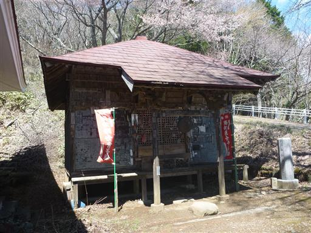
日輪寺の裏から延びる広い道を登っていく。
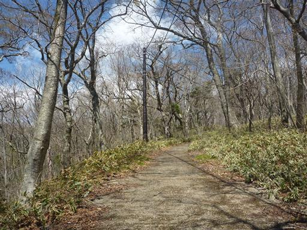
足元にはずっとカタクリの花が咲いている。非常にカタクリの多い山だ。
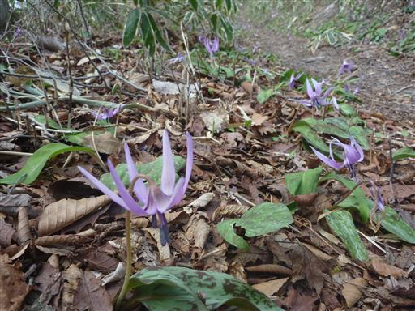
銀性水。八溝五水と言われる名水の1つだ。
一口飲んでみる。なかなかおいしい水だ。
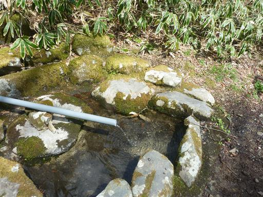
山頂直下に来ると再び車道と合流する。
ここから立派な鳥居をくぐって一登りで山頂だ。
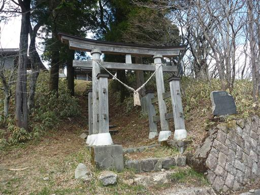
八溝山の山頂に到着。立派な八溝嶺神社が建っている。
この山が昔からの信仰の山であることがよく分かる。
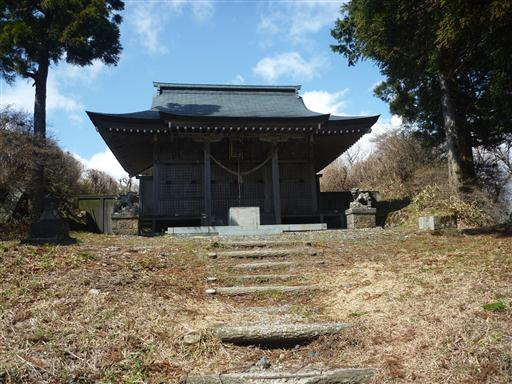
そしてその神社の隣には無粋な城の形の展望台が建っている。
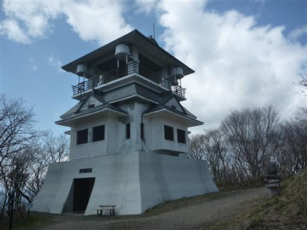
まずは展望台の裏にある八溝山の最高地点を訪れる。標高1022m。
この山は茨城県の最高峰で、この近辺では唯一1000mを越える山だ。
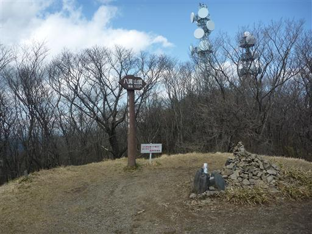
その後、お城の展望台に登ってみることにする。
展望台入口に置かれているマットはかなり年季の入ったものだ。
この展望台ができた時から使われているものだろう。

何となく古くさい感じの階段を登っていく。いつ頃建てられた展望台なのだろうか？
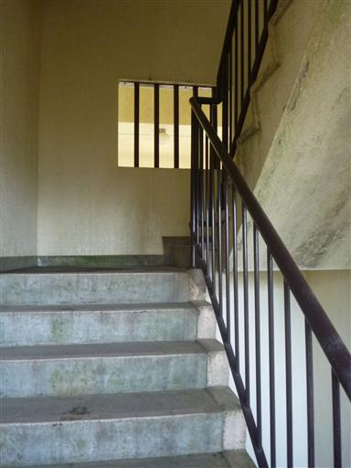
中腹の展望台は窓から雨が吹き込んで水浸しになっている。
こんな展望台でも10年ほど前は有料（100円）だったようだ。
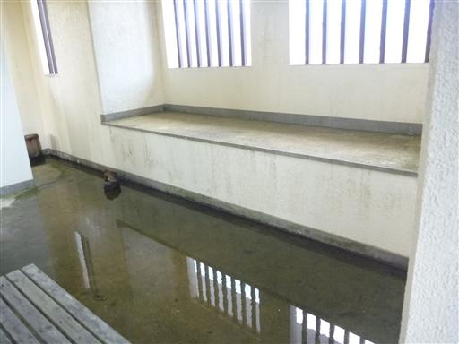
最上階の展望台に到着。この近辺の最高峰だけあってさすがに展望は良い。
残念ながら少し雲が出ているが、晴れていれば那須岳などがきれいに見渡せるらしい。
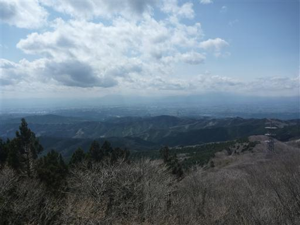
足元には山頂と八溝嶺神社が見える。
ゆっくりと展望を楽しみたかったがここは風が非常に強い。
最近子供は風が苦手でぐずっているため、早々に下りることにする。
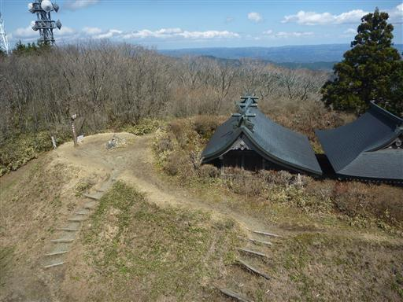
山頂で少しお菓子を食べて下山を開始する。
下山は八溝五水巡りの道を下ることにする。
こちらは竜毛水。手前に白毛水という名水もあったはずなのだが見落としてしまったようだ。
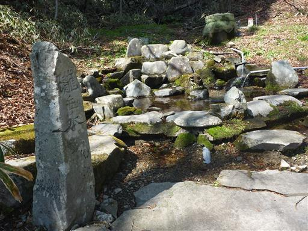
次は鉄水。水がチョロチョロとしか流れておらず、ここの水はあまり飲む気にならない。
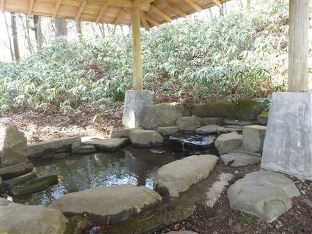
高梨家屋敷跡と書かれた標石が立っている。
奥に少し平らな場所があったが、謂れなどが書かれていないため何も分からなかった。
最後に金性水に到着。金という名がついているのだからここの水が一番美味いのだろうか？
すでに水を飲み過ぎているため、さほどおいしいとは思わなかった。
こちらの道にも大きな杉がところどころで見られる。
妙見菩薩。大きな石の手前に祀られている。
近くに大きく枝を広げた巨木が立っている。
周りに木がなく競争相手がいなかったため、ここまで大きくなれたのだろう。
ところどころで折れた木の枝が登山道に転がっている。
比較的最近折れたもののようだ。強風の影響だろうか？
無事、日輪寺入口の駐車場まで戻ってくる。
パラパラと登山者はいたものの、少し寂しい感じのする山だった。
宿泊先の那須方面に車を走らせる。
ベーグル・クーボーという店に立ち寄り、明日の朝食を購入する。
ベーグルの専門店だ。
ファミリーレストラン五十番で夕食。
ハンバーグを半分以上子供に取られてしまう。ジャンボハンバーグにしておくべきだったと後悔。
夕食後、宿泊先のビジネスホテルアジサイに向かう。